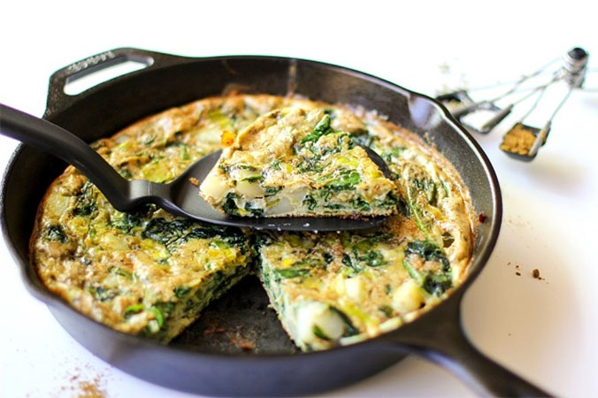

Potato, Spinach and Chive Frittata
Author:
Lucy Waverman
A frittata is a flat omelette. Serve either hot or cold, cut in wedges. You can vary the fillings-try leek and bacon, smoked salmon and chives-but the method stays the same. Use your largest skillet. Smaller ones work, but the mixture takes longer to cook.
Ingredients
- 1 tbsp (15 mL) Vegetable Oil
- 2 tbsp (25 mL) Butter
- 2 Potatoes, peeled and cubed
- 1 tbsp (15 mL) Fresh Rosemary, chopped
- 1 bunch Spinach
- 10 Eggs
- 1/4 cup (50 mL) Whipping Cream
- 1/2 cup (125 mL) Gruyère Cheese, grated
- 1/2 cup (125 mL) Chives, chopped
- Salt & Pepper

Mueller, Julia.
"spinach leek and potato frittata"
Time: 30 Minutes
Preparation
-
In a 10-inch (25 cm) skillet on medium-high heat, heat oil and 1 tbsp (15 mL) butter. Add potatoes and sauté until brown and tender, about 8-10 minutes. Sprinkle with rosemary, season with salt and pepper and reserve. Wipe out skillet.
-
Meanwhile, wash and stem spinach. Place in a saucepan on medium-high heat. Cover and steam until spinach is tender, about 2 minutes. Place spinach in colander, cool slightly then squeeze out all excess water. Chop
-
Place skillet on medium-low heat, and add remaining butter. When melted, add egg mixture. Cook slowly until bottom is set, stirring occasionally, about 10 minutes. The top will be slightly liquid.
-
Place skillet under preheated broiler and broil until top is just set. Turn out onto serving platter and cut into wedges. Garnish with chive flowers, if available.